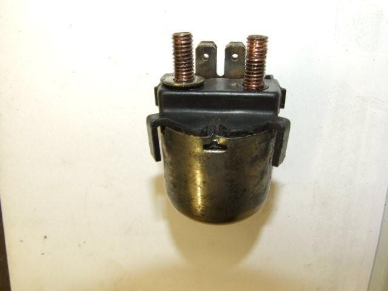

Solenoid Cleaning
Try this before replacing the solenoid. (Courtesy of "The Dutchy")
Remove the fuse cover which snaps at the corner around the relay:
Remove the fuse blade screws and plates:
Remove the nuts screwed on each terminal:

If you take a closer look at the metal casing, it is "dented" in three spots. Pry these dents open towards the outside of the casing. A small screwdriver from a watch repair set comes in handy:
If you opened up these dents, the plastic top cover should come out with a little help:
Here's the end result...watch out for those "V" shaped o-rings on each terminal. They're needed to keep the inside nearly water resistant. Also align the coil correctly to the two contacts on the plastic top:
In most cases, these contacts are burnt in a bit. Cleaning the contacts and raising the terminals a bit might save you from buying a new starter relay:
Back together is the other way around ...